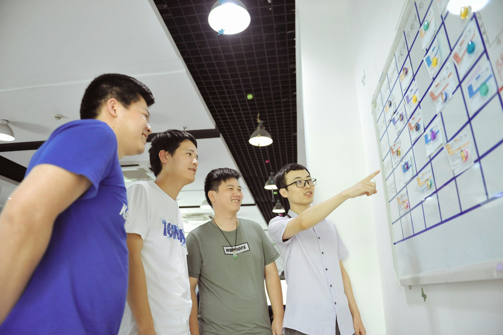
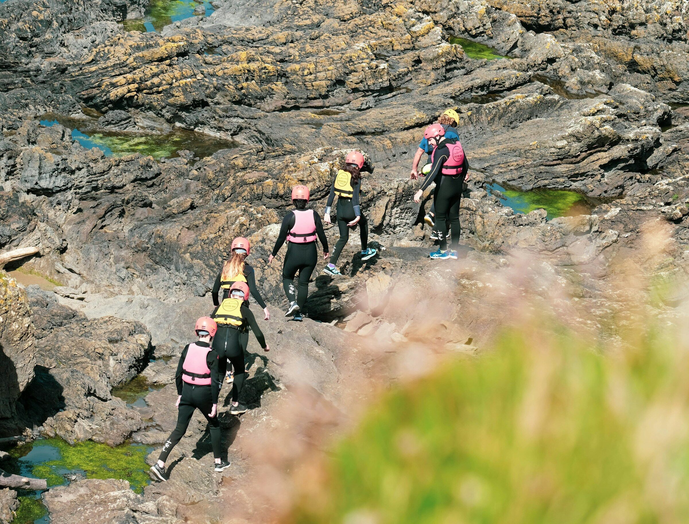

Strategy Workshop Formats for Your Next Offsite
Proven workshop formats for strategy days at an offsite: pre-mortems, 1-2-4-All, start/stop/continue, priority voting and more, with timings and tips.

The workshop format decides whether your offsite produces decisions or just discussion. Here are formats we see working again and again, with when to use them and how long they take.
1-2-4-All (20–30 minutes)
Everyone reflects alone on a question for one minute, then discusses in pairs, then in fours, then shares with the whole group. It gives quiet people a voice and surfaces the best ideas quickly.
Use for: generating ideas, answering an open question.
Pre-mortem (45 minutes)
Imagine it's one year from now and the plan has failed. Each person writes down why. Then group the reasons and decide what to do now to prevent them.
Use for: stress-testing a strategy or a launch.
Start, stop, continue (30–45 minutes)
Three columns on a wall. Each person adds sticky notes, then the group clusters and votes. The "stop" column is usually the most valuable.
Use for: team retrospectives, ways of working.
Dot voting (15 minutes)
List all options, give each person three to five dots, and vote. Fast, visual and democratic.
Use for: narrowing down priorities.
Impact vs effort matrix (30 minutes)
Place each initiative on a two-by-two grid: high or low impact, high or low effort. Focus on high impact, low effort first.
Use for: turning a long list into a realistic plan.
Silent writing (20 minutes)
Before discussing a big question, everyone writes their view in silence. Then read them aloud. It prevents the loudest voice from setting the direction.
Use for: sensitive or strategic topics.
Walk and talk (40 minutes)
Pairs go for a walk with one question, then report back. Simple and surprisingly effective, especially in a beautiful setting.
Use for: reflection, feedback, connection.
Decision and owner wrap-up (30 minutes)
End every day with a list: decision, owner, deadline. Read it aloud. Without this step, offsites produce energy but not change.
Tips for running workshops abroad
- Choose a room with natural light and space to move around. See how to choose an offsite venue.
- Keep sessions under 90 minutes, with real breaks.
- Bring materials: sticky notes, markers, flipcharts, a timer.
- Mix sessions with outdoor time. A team activity after lunch keeps energy high.
- Use a facilitator when the leaders want to participate fully.
For a full example programme, see our 3-day leadership retreat agenda.
Plan your strategy offsite
We find venues with meeting rooms that actually work and handle every flight and transfer. Talk to our expert to get 3 proposals, or see our company offsite format.
Frequently asked questions
What is the best workshop format for strategy?
A combination works best: silent writing or 1-2-4-All to generate ideas, dot voting or an impact/effort matrix to prioritise, and a decision-owner wrap-up to commit.
How long should a strategy workshop session be?
Sixty to ninety minutes per session, with breaks in between and no more than four sessions a day.
Do we need a facilitator for an offsite?
It helps when the topics are sensitive or when the leaders want to participate rather than run the sessions.
Let's plan your team's next retreat
Venue, programme, activities and every participant's flight, handled by one team. It starts with a call with our expert.
Keep reading
All articles
How to Plan a Company Retreat: The Complete Guide
A step-by-step guide to planning a company retreat: goals, budget, destination, venue, flights, programme and follow-up, from a team that books it all.

Leadership Retreat Agenda: A 3-Day Template
A proven 3-day leadership retreat agenda with session ideas, timings, facilitation tips and the right venue, for executive teams of 6 to 25 people.
How to Convince Your CEO to Fund a Company Offsite (with ROI)
A practical business case for a company offsite: the costs, the measurable returns, the arguments that work with leadership, and a one-page template.